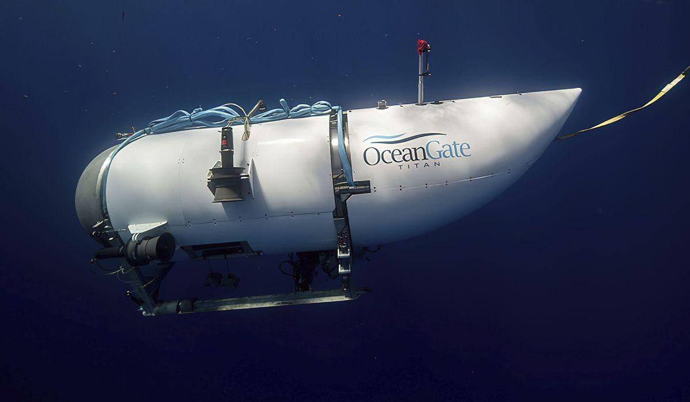

Follow the timeline of the Titan submersible's journey from departure to tragic discoveryThe wrecks of the Titanic and the Titan sit on the ocean floor, separated by 1,600 feet (490 meters) and 111 years of history. How they came together unfolded over an intense week that raised temporary hopes and left lingering questions. THE BUILDUP The Polar Prince, a Canadian icebreaker ship, steamed out of Newfoundland on Friday, June 16, towing the experimental Titan submersible and carrying the five-man team headed to explore the iconic ocean liner’s watery gravesite. Three missions involving other teams had been scrapped due to bad weather in the previous four weeks, but the latest OceanGate Expeditions group was hopeful. “A weather window has just opened up and we are going to attempt a dive tomorrow,” renowned adventurer Hamish Harding said Saturday on Instagram. “More expedition updates to follow IF the weather holds!” THE DIVE DOWN Moving about the Polar Prince, mission participants were required to wear water-activated life vests, bright orange jackets, helmets and steel-toed boots, said Arnie Weissmann, a journalist who spent eight days aboard the support ship in May before his mission was aborted. Just before a dive, they’d change into fleece vests, black flight suits bearing the OceanGate logo and warm socks — no shoes allowed on the submersible. The team was carried to the Titan’s launch and recovery platform by one of two inflatable dinghies named Stewie and Max. Once inside, they would sit on a platform, with their legs crossed or out straight. “You could not be in that thing if you’re claustrophobic,” Weissmann said. “It’s literally like being in a tin can because it’s got rounded sides.” The Titan submerged at 8 a.m. EDT Sunday, according to the U.S. Coast Guard. “Once the submersible is launched you will begin to see alienlike lifeforms whizz by the viewport as you sink deeper and deeper into the ocean,” the company wrote on its website when it advertised the expedition. “The descent takes approximately two hours but it feels like the blink of an eye.” On Sunday, the vessel lost contact with the Polar Prince around 10:45 a.m. THE SEARCH At 5:40 p.m., nearly three hours after the Titan was expected to resurface and nearly eight hours after the last communication, the Polar Prince notified the U.S. Coast Guard that the vessel was overdue, setting off an intense international search and rescue. After the craft was reported missing, the U.S. Navy analyzed its acoustic data and found an anomaly that was “consistent with an implosion or explosion in the general vicinity of where the Titan submersible was operating when communications were lost,” a senior Navy official later told The Associated Press. Though it wasn’t made public at the time, the Navy passed on that information on Sunday to the Coast Guard, which continued its search because the Navy did not consider the data to be definitive, according to the official, who spoke on condition of anonymity to discuss sensitive technology. By Monday afternoon, a C-130 Hercules aircraft from North Carolina and a Canadian P8 aircraft with underwater sonar equipment joined the search. Tuesday brought better weather and increased visibility, and by that morning, 10,000 square miles (25,900 square kilometers) had been searched. A U.S. Air National Guard crew arrived that day, as did a Bahamian research vessel, Deep Energy, which deployed camera-equipped, remote-operated robots. Meanwhile, sonar equipment detected banging noises Tuesday night and Wednesday morning, sparking hope that those aboard the Titan were still alive. “We are smack dab in the middle of search and rescue, and we’ll continue to put every available asset that we have in an effort to find the Titan and the crew members,” Captain Jamie Frederick of the First Coast Guard District said at a news conference Wednesday afternoon. By then, crews had scoured an area twice the size of Connecticut in waters 2½ miles (4 kilometers) deep. More resources were on the way, including multiple remote-operated vehicles, a salvage system capable of recovering heavy undersea objects and a mobile hyperbaric recompression chamber. Time was running out. The submersible was only equipped with enough air to last until sometime the next morning. THE DISCOVERY: On Thursday morning, a robotic vehicle discovered the tail cone of the Titan on the ocean floor, followed by the front and back ends of the Titan’s hull. “The debris is consistent with the catastrophic loss of the pressure chamber,” said Rear Adm. John Mauger of the First Coast Guard District. On its website before the expedition, OceanGate told future participants what to expect upon resurfacing. “Once on deck, you will be welcomed back by the expedition crew and be able to share the story of your incredible accomplishment,” said the company, which already had scheduled dates for a 2024 expedition. On Thursday, the company issued a statement mourning those killed, including company CEO and pilot Stockton Rush. In addition to Rush and Harding, the others on board were Titanic expert Paul-Henri Nargeolet and two members of a prominent Pakistani family, Shahzada Dawood and his son Suleman Dawood. “These men were true explorers who shared a distinct spirit of adventure, and a deep passion for exploring and protecting the world’s oceans,” OceanGate said. “We grieve the loss of life and joy they brought to everyone they knew.” Please read our comment policy before commenting. |
 |